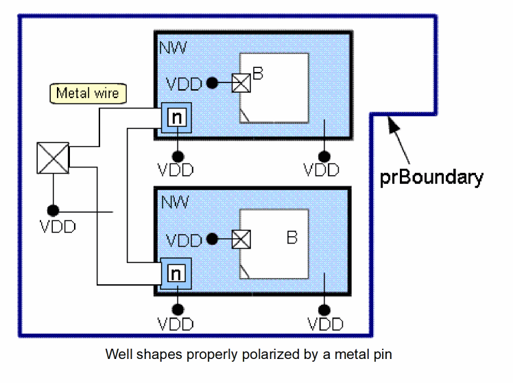

Connectivity Propagation through the Substrate and Well Areas
As already mentioned, the extractor does not propagate the connectivity from a soft-connect object; such as a substrate area, a well shape, or a device bulk terminal to a polarizing object, such as a tap via or a diffusion shape. However, it does support connectivity to propagate between two soft connect objects that directly overlap.
For example, if you polarize a substrate or a well area and place multiple devices on it, you will observe that the connectivity propagates to the bulk instance terminals of all the devices. As earlier mentioned, no connectivity propagation is observed to the bulk instance terminals for the devices placed outside the polarized substrate or well area.
Conversely, during a Pick From Schematic command, if you place multiple devices whose bulk instance terminal is assigned to a net and place them over a floating substrate or a well area—an area which is not assigned to a net—you will observe no connectivity propagation from the bulk instance terminals to the substrate or well. This enforces the requirement that the substrate or the well must be polarized from an external source, such as a tap via or a diffusion shape.
Checking Connectivity
During connectivity extraction, if the extractor identifies any design violations related to substrate, well shapes, or bulk terminals, it generates appropriate open and short markers in the Annotation Browser.
- All the devices placed on a polarized substrate or well area should have their bulk instance terminal assigned to the same net. If this is not done, the extractor creates short markers between the various nets.
-
If a net polarizes the bulk instance terminal of a device through the substrate or a well, the connection is considered valid irrespective of the distance between the bulk terminal and the tap via on the net polarizing it. This means that for connectivity checking, a single tap via is sufficient to polarize the bulk of all the devices placed on a given substrate or a well area.
For example, in the figure below, a metal path on net VDD polarizes two well shapes from a pin on that net by using Nvias that connect the metal to the wells.

Now, let us assume that the user deletes the VDD path. Although the two well shapes are close to each other, the extractor creates the open markers with the top-level VDD pin to indicate the preferred routing path. This is displayed in the figure below.
Impact of the Hierarchy on the Top-Level Connectivity Checking
When the extract stop level is increased from 0 to a higher value, the extractor is able to create appropriate connectivity violation markers for objects located in the hierarchy and, in particular, for objects that create a soft connection with a top-level object.
For example, in the following figure, the substrate is polarized on net GND by a top-level pVia, as displayed in the upper left of the figure. This creates a short condition with the pVia located in the hierarchy and connected to the top-level net, GND2. The extractor, therefore, creates a short marker to report this design error, as shown in the figure below.
Hierarchical Overlaps Processed During Extraction
The connectivity extractor processes various types of overlaps with unassigned hierarchical shapes. Some of these scenarios are explained below.
Scenario 1: F0 overlaps HF0, HF0 overlaps HF1
In this scenario, the ECV shape F0 assigned to net a overlaps the unassigned hierarchical shape HF0. If the extractor stop level is greater than 0, the connectivity extractor detects the overlap and chases hierarchical shapes connected to this unassigned hierarchical shape.
Here, HF0, which is an unassigned hierarchical shape, overlaps another hierarchical shape HF1, which is connected to net s1 that has terminal s1 in the instance master. Therefore, HF0 is effectively connected to net b and the overlap of HF0 and F0 creates a short between net a and net b.
If the extractor stop level is 0, no shorts are detected because the extractor ignores the hierarchical shapes HF0 and HF1.
Scenario 2: F0 overlaps HF0, HF0 overlaps HF1, HF1 overlaps HF2
In this scenario, the ECV shape F0 assigned to net a overlaps the unassigned hierarchical shape HF0. If the extractor stop level is greater than 0, the connectivity extractor detects the overlap and chases hierarchical shapes that are connected to this unassigned hierarchical shape.
Here, HF0, which is an unassigned hierarchical shape, overlaps another unassigned hierarchical shape HF1, and HF1, in turn, overlaps HF2. The hierarchical shapes HF0, HF1, and HF2 are, therefore, effectively connected to net a and the instance terminal for terminal s2 is assigned to the same net.
If the extractor stop level is 0, the hierarchical shapes—HF0, HF1, and HF2—are ignored by the extractor and the instance terminal for terminal s2 remains unassigned.
Scenario 3: F0 overlaps HF0, HF0 overlaps HF1, and HF1 overlaps F1
In this scenario, the ECV shape F0 overlaps an unassigned hierarchical shape HF0. If the extract stop level is greater than 0, the connectivity extractor detects the overlap and chases hierarchical shapes that are connected to this unassigned hierarchical shape.
Here, HF0 overlaps another hierarchical shape HF1, which is effectively connected to net b due to its overlap with the ECV shape F0. Therefore, HF0 is also effectively connected to net b.
Because HF0 also overlaps with ECV shape F0, which is connected to net a, a short marker is created between F0 and HF0.
If the extract stop level is 0, HF0 and HF1 are ignored by the extractor. Therefore, the short is not detected.
In this scenario, the ECV shape F0 overlaps the unassigned hierarchical shape HF0.
An illegal hierarchical overlap is reported because the ECV shape is assigned and the:
- hierarchical shape is metal or poly
- instance master has at least one implemented terminal
- instance is not transparent
If the ECV shape is unassigned, no error is reported. If the extract stop level is 0, hierarchical shape HF0 is ignored and no error is reported.
The environment variable extractVerifyIllegalHierConnectionsIgnoreUnassignedHierShapes controls whther an error is reported this scenario.
Scenario 5: F0 overlaps HF0, HF0 overlaps HF1
In this scenario, HF0 and HF1 are two hierarchical shapes in the master of the same instance. HF1 is assigned to an internal net, a. However, this net is not connected to a terminal in the master. So, the connectivity of the hierarchical shape cannot be compared to the connectivity of the ECV shape. Therefore, an “illegal hierarchical connection” marker is created.
If the ECV shape is unassigned, the connection is considered valid and no marker is created. If the extract stop level is 0, hierarchical shapes, HF0 and HF1, are ignored by the extractor and no marker is created.
Scenario 6: HF0 overlaps HF1, HF1 overlaps HF2
In this scenario, because HF0 is unassigned, it is effectively connected to the overlapping HF1. Therefore, an illegal hierarchical connection marker is not created, and the connection is considered valid.
Scenario 7: Illegal hierarchical connection between two instances
In this scenario, an illegal hierarchical connection marker is created because two internal nets are connected at the overlap of the two instances.
Scenario 8: F0 connects to hierarchical well shape HF1
In this scenario, HF1 is a hierarchical well shape and HF0 is a hierarchical diffusion shape. In addition, an implant shape exists that establishes connectivity between the cut, diffusion, and the well shapes.
F0 is an ECV shape on a metal layer that connects to HF1 through the cut and the diffusion in accordance with the following via definition:
Metal -> Cut -> (Diffusion && N/P Implant) -> N/P Well
Since F0 is assigned to a net and HF1 is assigned to an internal net s1, the connection is considered invalid and an illegal hierarchical connection marker is created on the overlap of F0 and HF0.
If the extract stop level is 0, the hierarchical shapes, HF0, HF1, the cut shape, and the implant shape are ignored by the extractor. Therefore, the illegal hierarchical connection marker is not created.
Related Topics
Bulk Area Connectivity Extraction - Identify the Substrate and Well Tap Vias
Return to top